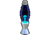

Yoo! I'm Radixliner, but you can simply call me Radix :]
22nd years old, quite a lazy boy who can do photography and art,
and also, interested in music, tech, and multifandom.
Have a great day!
Collection of Photos
My Persona + Fanarts
Give support would be appreciate: Ko-fi Saweria*
*if you gonna send a tip when i'm not streaming, you may
also want
to send a proof to my
email since they cannot notified me off-stream